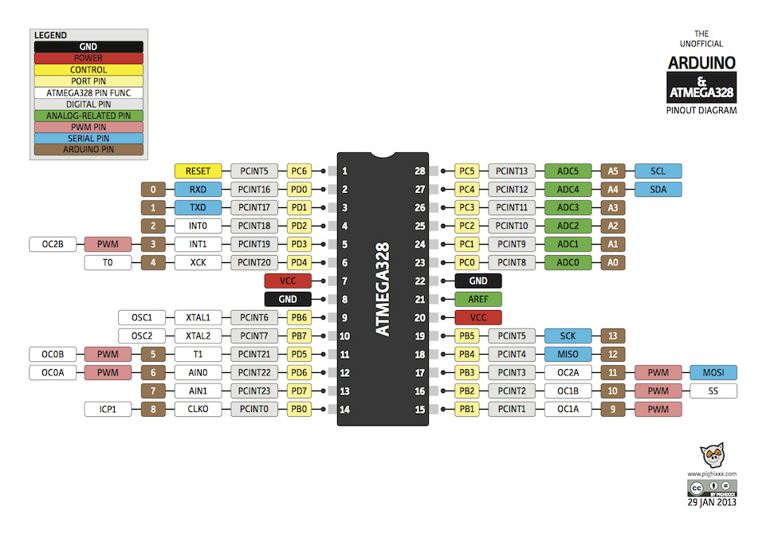
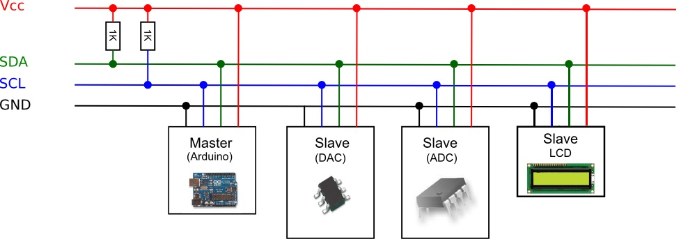

 |
|
 pull-up resistor 1K~10K (I2C Bus 提昇電阻之計算)
|
|
address 編號長度為7位元共128個，其中某些位址保留於特殊用途，因此可用的slave位址有112個 有些IC在出廠時就預設,如: DS1307時鐘IC的位址為:0x68 溫度感測器TC74的位址為:0x90 Wii左手把位址為:0x52 |
| // master_sender.ino #include <Wire.h> #define SLAVE_ADDRESS 1 char incomingByte = 0; void setup() { /*join I2C bus as a Master */ Wire.begin(); Serial.begin(9600); Serial.println("Type something to send:"); } void loop() { } void serialEvent() { /* read one byte from serial port*/ incomingByte = Serial.read(); /* send the received data to slave */ Wire.beginTransmission(SLAVE_ADDRESS); Wire.write(incomingByte); Wire.endTransmission(); } |
// slave_receiver.ino #include <Wire.h> #define SLAVE_ADDRESS 1 char incomingByte = 0; void setup() { /* join I2C bus as a slave with address 1 */ Wire.begin(SLAVE_ADDRESS); /* register event */ Wire.onReceive(receiveEvent); Serial.begin(9600); Serial.println("Received data:"); } void loop() { } void receiveEvent(int howMany) { while (Wire.available()) { /* receive one byte from Master*/ incomingByte = Wire.read(); Serial.print(incomingByte); } } |
| 程式說明: Master 使用 Wire.begin() 加入 I2C bus 當 serial port 上有收到資料時，Arduino 會自動執行 serialEvent()。 在 serialEvent() 函式中，Master 首先會從 serial port 讀取一個 byte 的資料，然後再將資料透過 I2C 送給 Slave 1。 每當 Master 要送資料給 Slave 的時候，要先呼叫 Wire.beginTransmission() 建立傳輸，緊接著呼叫 Wire.write() 把資料放到 buffer，最後呼叫 Wire.endTransmission() 真正送出資料並結束傳輸。 |
程式說明: Slave 一樣是使用 Wire.begin() 加入 I2C bus，但是必須傳入一個參數指定所用的 address 利用 Wire.onReceive(receiveEvent) 註冊事件，之後當 Master 送資料給 Slave 時，Arduino 就會自動呼叫 receiveEvent() 在 receiveEvent() 中，程式的邏輯很簡單，只是利用 Wire.available() 檢查是否有資料，接著利用 Wire.read() 將資料出來再丟到 serial port 上。 |
|
// 1. // Wire Master Writer #include <Wire.h> void setup() byte x = 0; void loop()
Wire.write("x is ");
Wire.write(x);
Wire.endTransmission(); x++; |
// Wire Slave Receiver #include <Wire.h> void setup() Wire.onReceive(receiveEvent); void loop() void receiveEvent(int howMany) |
|
//2. // Wire Master Reader #include <Wire.h> void setup() void loop() while(Wire.available())
} |
// Wire Slave Sender #include <Wire.h> void setup() void loop() void requestEvent() { Wire.write("hello "); /* respond with message of 6 bytes as expected by master */ } |